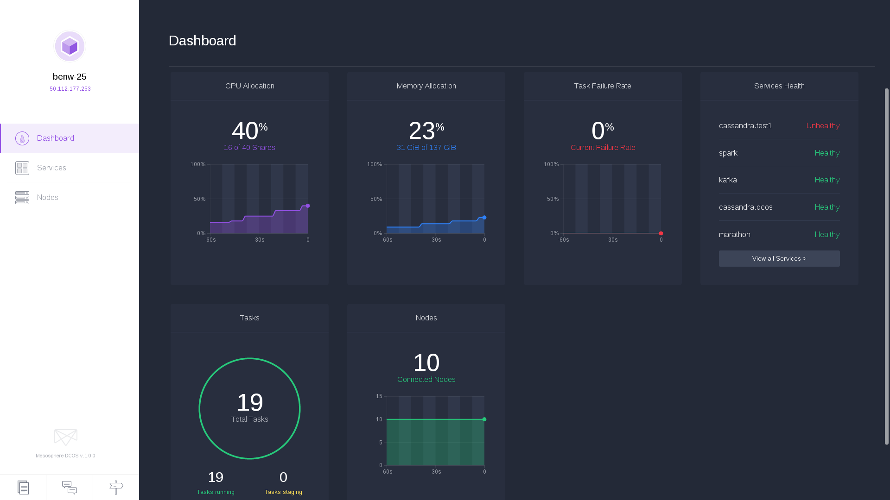

Doing Big Data for Real with Docker
Mesosphere DCOS
Elizabeth Lingg
elizabeth@mesosphere.io
Agenda
- Intro
- Mesosphere, Docker, and DCOS Overview
- Big Data Container Orchestration using DCOS and Docker
- Demo
- Q & A
Intro
- Engineering Manager @ Mesosphere
- M.S. Computer Science with a Specialization in Artificial Intelligence from Stanford
- B.S. Computer Science with a Minor in Math, B.S. Policy and Management from Carnegie Mellon
- Experience in AI, Big Data, and Systems
- Enjoys applying Distributed Systems to Manage and Reason Over Large Amounts of Data
Mesos
Provides primitives to author datacenter-native apps.
Primitives
- Resources (cpu, mem, disk, ports)
- Asset fetching
- Task state tracking
- API for the datacenter
Status quo is static partitioning
and use of virtual machines
Mesos let us treat a cluster of nodes...

As one big computer

|
Not as individual machines |
Not as VMs |
But as computational resources like cores, memory, disks, etc.

We love containers

Most modern applications are a web of containers

a container orchestration platform


Containerization in Mesos, a brief history
Mesosphere DCOS
- Software to provide a complete OS: init, cron, apt-get, discovery, routing
- Beautiful web UI and CLI
- Support
- Ecosystem of DCOS Services
- Mesos Master and Mesos Workers Running in Docker Containers
DCOS UI

DCOS CLI
$ dcos
Command line utility for the Mesosphere Datacenter Operating
System (DCOS). The Mesosphere DCOS is a distributed operating
system built around Apache Mesos. This utility provides tools
for easy management of a DCOS installation.
Available DCOS commands:
config Get and set DCOS CLI configuration properties
help Display command line usage information
marathon Deploy and manage applications on the DCOS
node Manage DCOS nodes
package Install and manage DCOS software packages
service Manage DCOS services
task Manage DCOS tasksBig Data Distributed Applications on DCOS
- Mesos Master and Mesos Workers Running in Docker Containers
- Distributed Applications Running in Containers on the Mesos Workers
- Container Orchestration done by Apache Mesos
- Resource Allocation and Scaling Managed by Apache Mesos
Big Data Distributed Applications on DCOS
- Popular Distributed Apps easily deployed on a single DCOS Cluster
- Kafka, Cassandra, HDFS, Spark, and other Big Data Services
- Health checks and failure recovery are automated
Application Networking
- Interact with the CLI or REST API's to interact with the services
- Mesos DNS Resolution
- Docker Networking mainly done through host mode networking, works seamlessly
Data Security
- Services storing secure data run on private worker nodes in the cluster
- Private nodes can only be accessed through VPN
- As needed, services choose what is exposed through a proxy running on a public node
- Distributed Application can authenticate with the Master using Framework Authentication (Kerberos Option)
Example: Simple Docker App on DCOS
{
"id": "/mesosphere/cd-demo-app",
"instances": 1,
"cpus": 1,
"mem": 512,
"container": {
"type": "DOCKER",
"docker": {
"image": "mesosphere/cd-demo-app:$tag",
"network": "BRIDGE",
"portMappings": [
{
"servicePort": 28080,
"containerPort": 80,
"hostPort": 0,
"protocol": "tcp"
}
]
}
},
"healthChecks": [
{
"gracePeriodSeconds": 120,
"intervalSeconds": 30,
"maxConsecutiveFailures": 3,
"path": "/",
"portIndex": 0,
"protocol": "HTTP",
"timeoutSeconds": 5
}
],
"constraints": [
[ "hostname", "GROUP_BY" ]
]
}<Example: Cassandra DCOS Service
Features
- Managed node configuration
- Health Monitoring
- Rest API
- DNS Names for nodes
- Multiple Rings in one cluster
Install
$ dcos package install cassandraCustomizable Install Options
{
"cassandra": {
"cluster-name": "dev",
"resources": {
"cpus": 3.0,
"mem": 6144,
"disk": 30720
}
}
}$ dcos package install cassandra --options=options.jsonInstalling
Healthy
Rest API
|
|
|
|
|
Demo!
Q & A
Thanks!
Let's chat!
We're hiring!
- DCOS: mesosphere.com
- Join: mesosphere.com/careers/